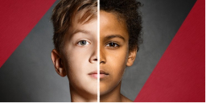

Dernières News !
Qui est la nouvelle Miss France ?
La nouvelle Miss France a été élue et elle ne laisse pas indiffe\érent ! Ce samedi 14 décembre, Clémence Botino 22 ans a été élue Miss France 2020 en direct sur le plateau de TF1 (présenté par ...
Lire la suiteÊtre noir à Sciences Po face au racisme de l’élite
Mi-septembre, Emilien a fait sur Twitter le récit de sa fin de scolarité à Sciences Po Lyon. Etudiant brillant, le jeune homme avait été confronté à une discrimination raciste et violente liée à sa couleur de peau...
Lire la suiteArrêtons les féminicides

J’en profite pour vous dire que je marcherai, comme beaucoup d’entre nous, le 24 Novembre contre les violences sexistes et sexuelles ; je serai quelque part au milieu du cortège féministe révolutionnaire 🙂 n’hésitez pas à venir me faire un coucou !
Lire la suiteArrêtons les féminicides
J’en profite pour vous dire que je marcherai, comme beaucoup d’entre nous, le 24 Novembre contre les violences sexistes et sexuelles ; je serai quelque part au milieu du cortège féministe révolutionnaire 🙂 n’hésitez pas à venir me faire un coucou !
Lire la suite